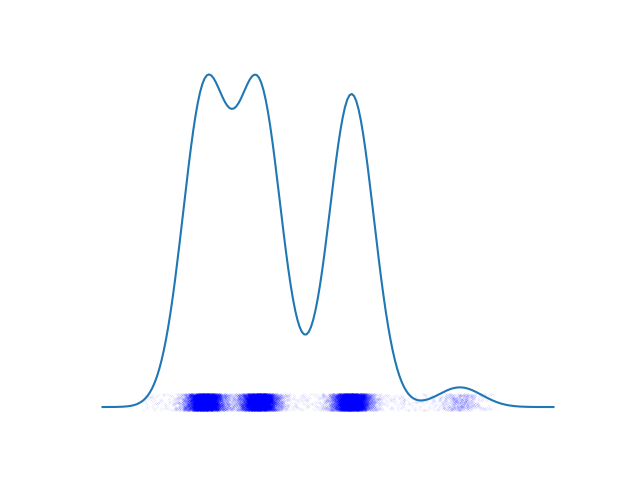
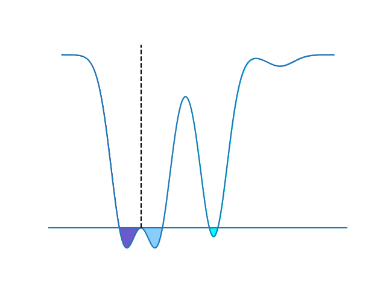
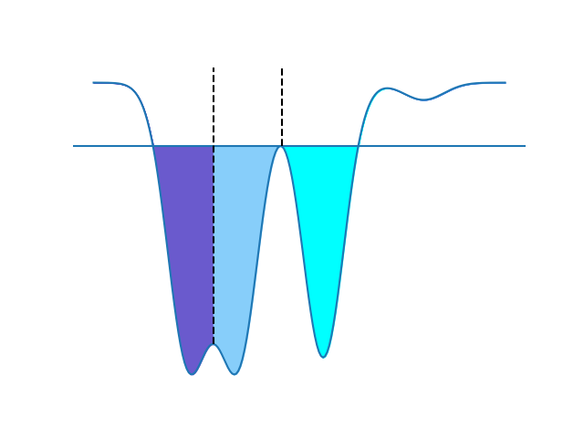
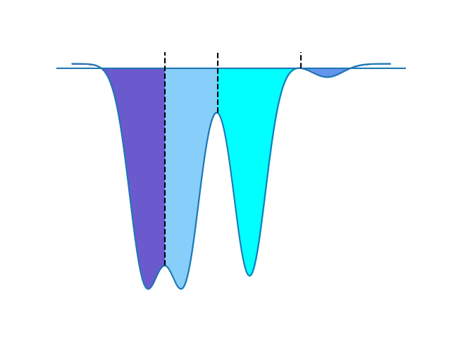
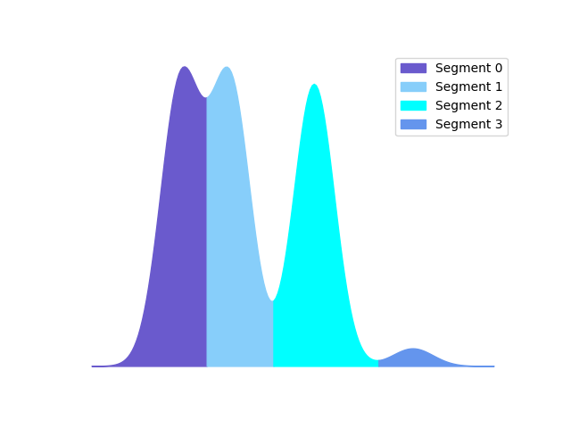
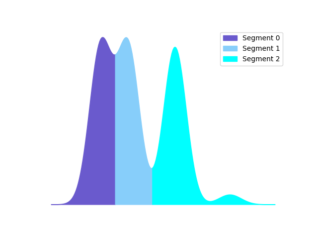
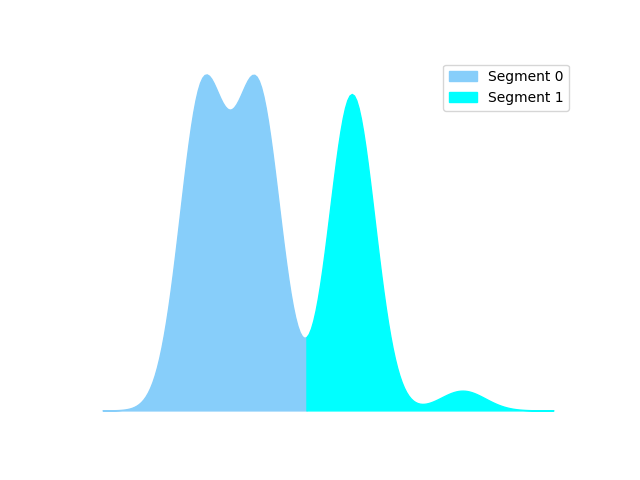

A Guide to Segmentation¶
This section offers a simple guide to flow cytometry segmentation and an explaination for the techniques used.
The Big Picture¶
The goal of the segmentation process is to locate and isolate what a human expert considers a gate. The first step a human expert carries out is to compute a per-channel histogram for each sample and identify prominent regions of interest (mountains) with comparatively large gaps between them and ignore regions with spurious gaps or few “bins”. Lines are then drawn by the expert to demarcate the locations of gates to prevent spillover from one region to another and thus preserve biologically relevant information such as ratios between subpopulations. To replicate this procedure, we employ a three-step approach:
Probability Density Function Estimation.
Watershed Segmentation.
Non-maximum Suppression.
Similar to watershed segmentation for images, the idea of this approach is based on estimating the probability density function (pdf) and interpret it as a 2D topographical map with one spatial coordinate versus density, which corresponds to 1D mountains and valleys. "In such a “topographic” interpretation, we consider three types of points: (1) points belonging to a regional minimum; (2) points at which a drop of water, if placed at the location of any of those points, would fall with certainty to a single minimum; and (3) points at which water would be equally likely to fall to more than one such minimum. For a particular regional minimum, the set of points satisfying condition (2) is called the catchment basin or watershed of that minimum. The points satisfying condition (3) form crest lines on the topographic surface, and are referred to as divide lines or watershed lines. The principal objective of segmentation algorithms based on these concepts is to find the watershed lines. " (Gonzalez, Rafael C, and Richard E. Woods. Digital Image Processing.)
Segmentation¶
We construct a sample z as a mixture distribution with shifted normal components. Given \(z_0~N(0,0.3)\), \(z_1=z_0\), \(z_2=z_0+1.7\),\(z_3=z_0+4.6\) ,and \(z_4=z_0+8\), we get \({z_1,…,z_4 }∼{P_1 (x),…,P_4 (x)}\) and mixing wights w_i = 0.32 for i ∈{1,2,3} and 0.04 for i=4. We end up with the final $ z ∼ f(x) = \[\sum_{i=1}^{4} w_i P_i (x) \]$
First, we compute the pdf for each channel in each sample using Kernel Density Estimation (KDE) as shown in figure(1). Second, we “flip” the pdf by multiplying it with -1 and apply Watershed segmentation algorithm. Flipping the pdf converts mountains to catchment basins for the Watershed algorithm.
  {kind=link}
{kind=link}
{kind=link}
The algorithm starts from a collection of chosen seeds (typically all local minima) with each seed having a different label. These seeds indicate where the flooding starts. It is worth mentioning that although these seeds have distinct labels, they might end up merged if they do not surpass defined thresholds.
 {kind=link}
{kind=link}
Supression and Merging¶
This procedure typically produces an over-segmented pdf. Thus, the third step is to “suppress” spurious segments based on three morphological characteristics that define what a proper segment is, namely, how many cells are there in a gate, and how wide and deep the valley between two consecutive gates is. If a segment does not satisfy these criteria, it is suppressed and assigned to its nearest segment as shown in
 {kind=link}
{kind=link}
More formally, given a sample’s channel data \(x\), a \(1D\) vector with pdf \(f(x)\) and a set B of watershed lines such that \(B={b_0,b_1,…,b_n}\) where \(b_i\) is the location of the \(i^{th}\) watershed line, a segment \(S_k\) (also a gate) is defined as the cells with values between the two consecutive watershed lines \(b_{k-1}\) and \(b_k\). We notice that \(\int_{-∞}^∞ f(x) dx= \int_{0}^{1}f(x) dx =1 \) since f(x) is a probability density function and therefore the area under the curve (AUC) of a given segment could be viewed as a ratio. We compute the AUC of a segment S_k using the trapezoidal rule as a fast approximation:
We then check the following inequality \(AUC(S_k )≤α\) to determine whether the segment \(S_k\) is a proper segment or a spurious one. The hyperparameter α∈[0,1] serves as a minimum threshold value which controls how sensitive the segmentation process is to rare populations. A typical value of α is 0.03, which entails that any segment with AUC less than 3% of the total number of cells will be suppressed. It is also worth noting that for some channels with small population such as natural killer (NK) cells which are comparatively rare (0.5-2%), an α≤0.01 is recommended. The following step is to assign the points of the suppressed segments to the nearest non-suppressed segments.
Another important cue by which human experts identify proper segments is the topography of the valley between two consecutive segments. Typically, the valley between two segments should possess a certain minimum width and depth. A triangle is constructed using the highest two points in each segment and the watershed line x-y location. The depth of the valley is defined as the difference ∆y between the watershed line and the highest point of the two segments. Similarly, the width of the valley is defined as the difference ∆x between segments two highest points. We then check if ∆x≤β and \(\frac{∆y}{y_m}\) ≤γ, where β, γ ∈[0,1] are hyperparameters and y_mis the global maximum of \(f(x)\) which is used as a normalization coefficient to ensure that \(\frac{∆y}{y_m}\) and γ are less than 1. If the valley is not wide or deep enough, we merge the two segments in one large segment as shown in fig().